16.6. Time Dilation#
Let’s build a light clock. Anything that has a regular time “beat” can be a clock, we’re going to use light beams that bounce around between mirrors.
The premise is this:
A light pulse is inserted through a hole at the bottom of…of course…a flatbed train car. No apples.
There are two perfect mirrors at the top and the bottom which are separated by a distance, \(L\)
The beams bounce back and forth in this view, which is that of the frame of reference of the train…we’ll call it \(A\) because you know what’s coming.
So up is tick, and back down, is tock. A very accurate clock.
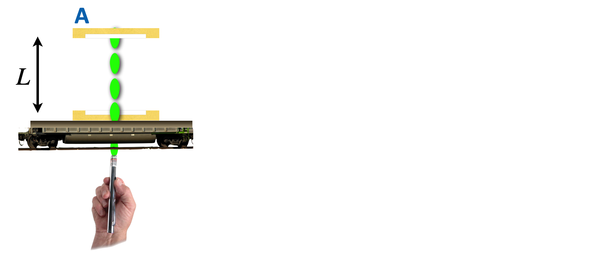
But it’s a train and trains move and so does this one to the right at a velocity \(u\). And, of course we have a guy lounging on a couch and he’s watching the whole thing go by. What does someone riding on the train see? Exactly the same thing at each increment of time: what’s shown in the above picture. A perfectly vertical path of the light back and forth. Tick tock.
What does Couch Guy see? The train is moving and so when tick happens, it’s moved to the right a bit from the laser-pointer insertion. When tock happens, it’s moved a little further. So if Couch guy maps out the trajectory of the light pulses from his \(H\) frame, he’d see this:
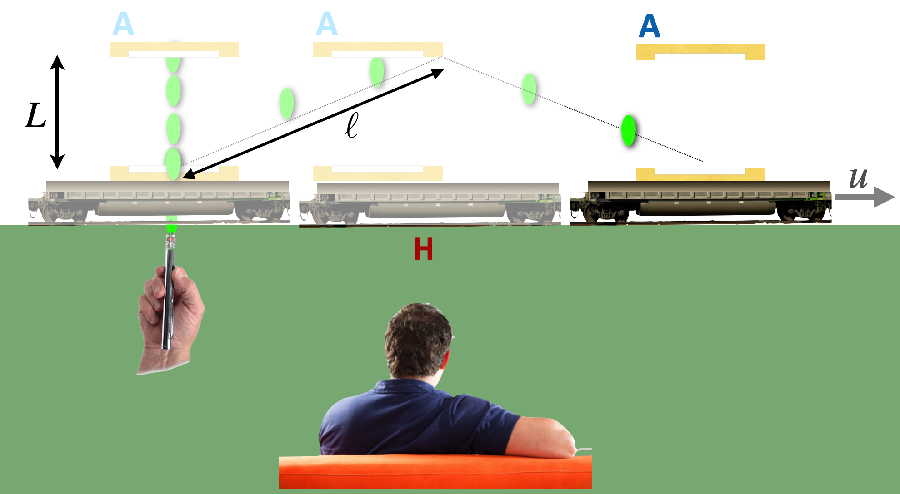
The path of the light for him is a triangle.
The Second Postulate makes this simple situation become weird. And this is an important conclusion and it’s so subtle that it’s worth following it carefully
Note
I walk you through the weirdest consequence of the Second Postulate:
In fact, this is an Pop-Up assignment that you’ll receive instructions for during the class. It’s to follow along with this simple, but enlightening derivation and turn in your version of it.
16.6.1. Spoiler: Time Dilation#
If you’ve not been through the movie (why not?) then this is a spoiler alert! The calculation follows the two paths of light, the tick tock, up and down in the \(A\) frame and the tick tock in the longer, triangular path in the \(H\) frame. The distances traveled are different – \(L\) for the \(A\) frame and the hypothenuse of the triangle of which one leg has a length \(L\) as observed in the \(H\) frame.
We can solve for the speed of light during a tick tock (actually, in the video, just a tick) which is simply the distance traveled divided by the speed.
Pencils Out! 🖋 📓
We pretend for the moment that the speed of light in the Home frame and the Away frame are different (\(c_H \text{ & } c_A\)) and we worked to solve for the two “tick” times from both frames:
\(u\) is the relative speed between the train and the ground, \(A\) and \(H\)
\(c_A=\dfrac{L}{t_A}\) and
\(c_H=\dfrac{\ell}{t_H}\)
By invoking the Second Postulate:
we found that the tick from the tick-tock of the Home frame and the tick from the tick-tock of the Away frame are different! From the video clip, you can see that it’s the Second Postulate that causes this to happen.
We found that:
This root-factor will appear over and over in relativity and so it gets a special name, \(\gamma\), and is called the “relativistic gamma”:
Furthermore, the frame speed compared with the speed of light also appears over and over and it gets its own name, “beta”:
So with that we can recast our two formulae as:
Now let’s think about this. First, look carefully at \(\gamma\). Notice that
And:
Can you see that this is the same thing as the train sitting still relative to Couch Guy? The clocks would both report the same times since they’re both in the same reference frame.
Is \(\gamma\) bigger or smaller than 1?
Well, \(u/c <1\) (why will come later) so \(\beta\) is a number that always is between \(0\) and \(1\). So…\((1-\beta^2)\) is a number that’s always less than one and so:
Let’s plot it as a function of \(u\) or more easily and generally, as a function of \(\beta\):
Look at the extremes: when \(u\) is very close to the speed of light, \(\gamma\) is growing very large, without bound, very fast. When \(\beta=1\), then \(\gamma \to \infty\)! Maybe \(\beta\) should never reach the speed of light? Stay tuned.
If we look at the low-\(\beta\) end of the \(\gamma\) curve,
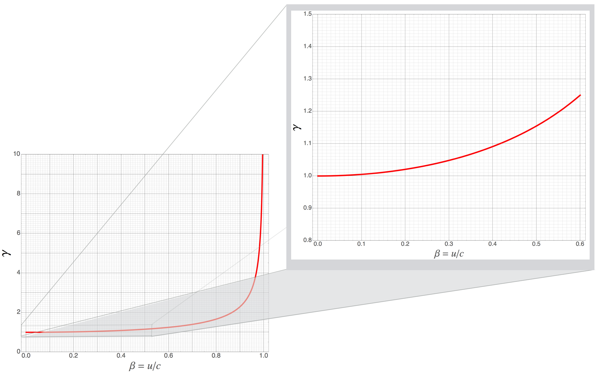
Here’s an interactive plot of the gamma function.
Remember to push Run:
we see that the deviation from \(\gamma=1\) is very slow. At, say \(\beta=0.1\), \(\gamma\) is barely 1.005.
Let’s get a feel for just how fast \(\beta=0.1\) is. That’s 10% of the speed of light, or \(3\times 10^7\) m/s:
MKS units
US units:
The fastest human-made object at this time is the Parker Solar Probe: which is headed towards the sun at 213,200 mph, or about 95,310 m/s – what’s its beta?
What’s its gamma? Inside of the width of the blue dot of the plot:
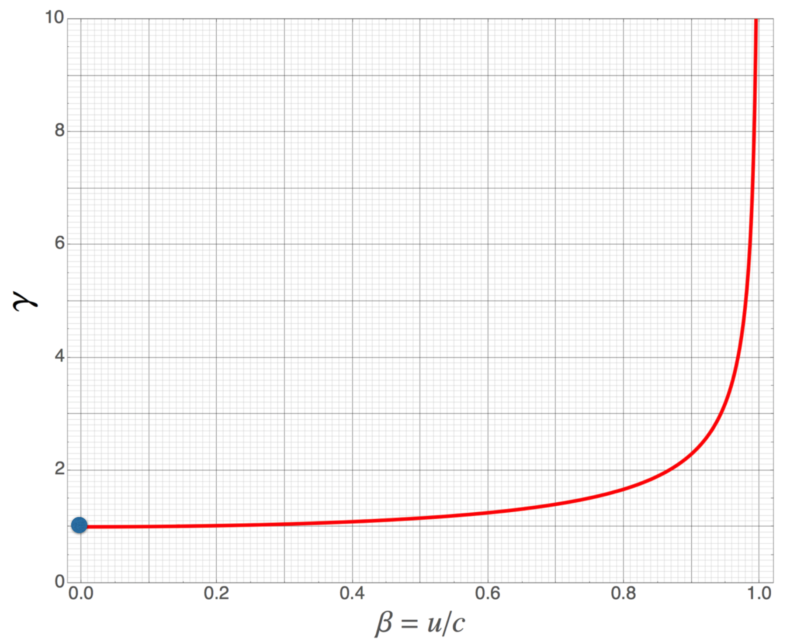
Can you see now that for anything like a human speed, \(\beta\) is so close to 0 as to be silly to contemplate in everyday life.
Please answer question 2 📺
Please answer question 3 📺
In general, though, the two times are different for co-moving frames of reference and it matters in nuclear physics, in particle physics, in astrophysics, and in…well, your grandparents’ TV, your GPS system, and in a number of modern devices. But driving on the highway or flying in an airplane? Notsomuch.
Please study example 1 🖋 📓
16.6.2. What Does Time Dilation Mean?#
Let’s distinguish between two important concepts – really common sense, but in the Einstein-way of being precise about the meanings of simple things.
An event
is something that happens at a particular place at a particular time. If the train car had a firecracker at a particular place on the car and it exploded while the car was in motion relative to the ground, then both observers could note the position in their frames and the time in their frames at which the explosion event occurred.
An interval
is the difference between two positions in space and time during which two events occur. In the firecracker example, if Moe lights the fuse of the firecracker, that’s one event and the explosion is then a second event and the space and time differences, which I’ll often note as \(\Delta x\) and \(\Delta t\), are the space and time intervals.
Often, we can define the first event in an interval as the beginning of a time interval, so to be boringly pedantic: \(\Delta t = t-t_0 = t - 0 = t\) if we define the initial time (when you push the start button on your stopwatch) to be zero, \(t_0=0\).
Here’s an example which involves an apple. Let’s string a series of time snapshots together top, to bottom as time increases, top to bottom.
1. An Away frame with an apple advances to the right relative to our Home frame.
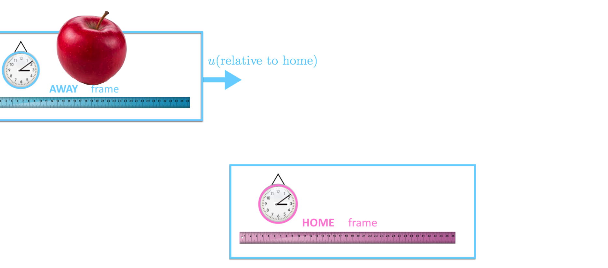
2. At a particular point, the apple approaches its last moment of being whole…
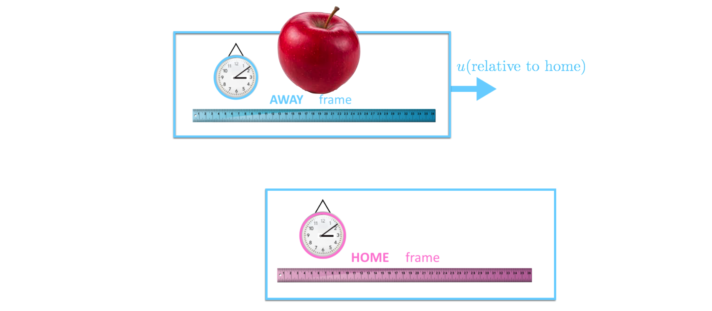
3. …because 1 second later, a bite happens.
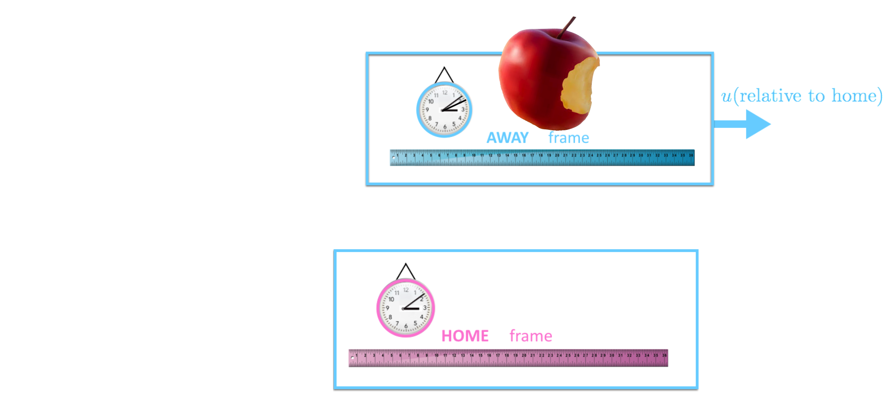
4. And the lighter apple continues on its way.
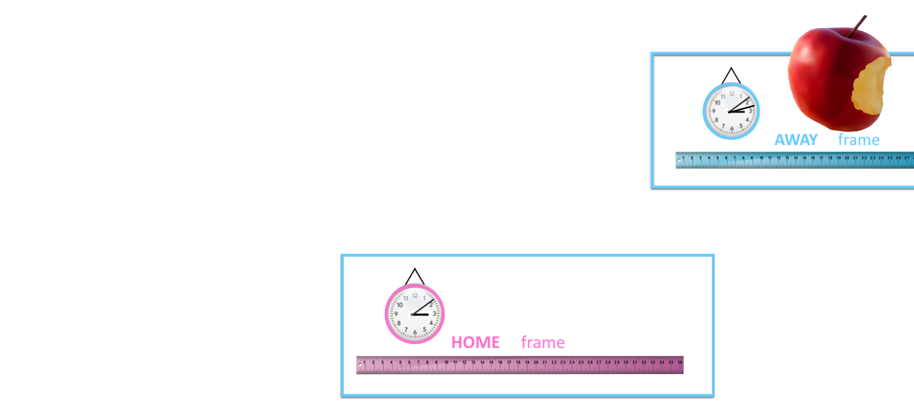
So, we have an interval at one moment it’s whole, and then a second later, it’s lost a bite.
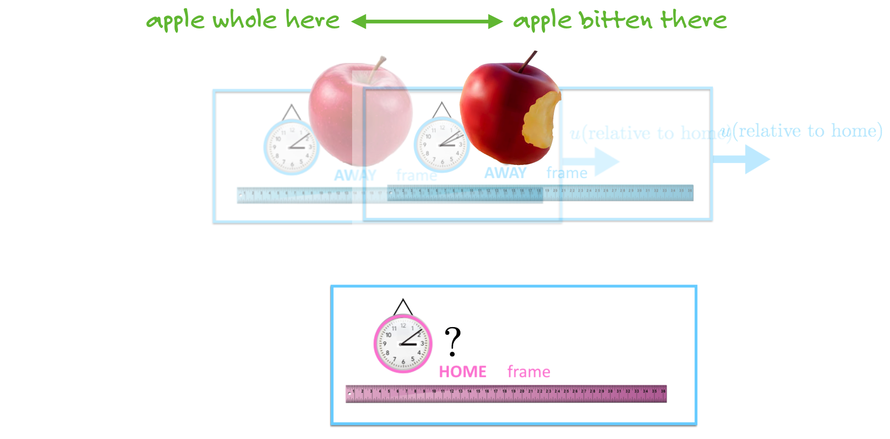
Think of this as sitting beside the tracks and as the train emerges from a tunnel (starting the stopwatch), watching a passenger take a bite out of her apple (halting the stopwatch).
So here,
\(\Delta t_A = 1 \) second which we can call just \(t_A\) since the stopwatch starts at \(t_A=0\).
The train is moving right along at 90% of the speed of light.
What’s \(\Delta t_H\)? How long did it take for the passenger to take that bite after emerging from the tunnel as observed by, say, creepy Couch Guy?
What Time Dilation says is this:
We can use the plot of the relativistic gamma function to find what \(\gamma\) is for this train frame.
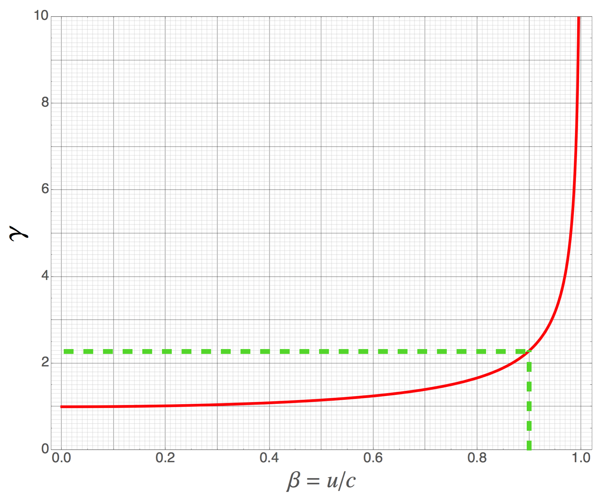
I think it’s about \(\gamma=2.3\).
So while the apple-consumer sees her clock advance by 1 second, Couch Guy sees his clock advance by 2.3 seconds.
Let’s get this clear in our heads.
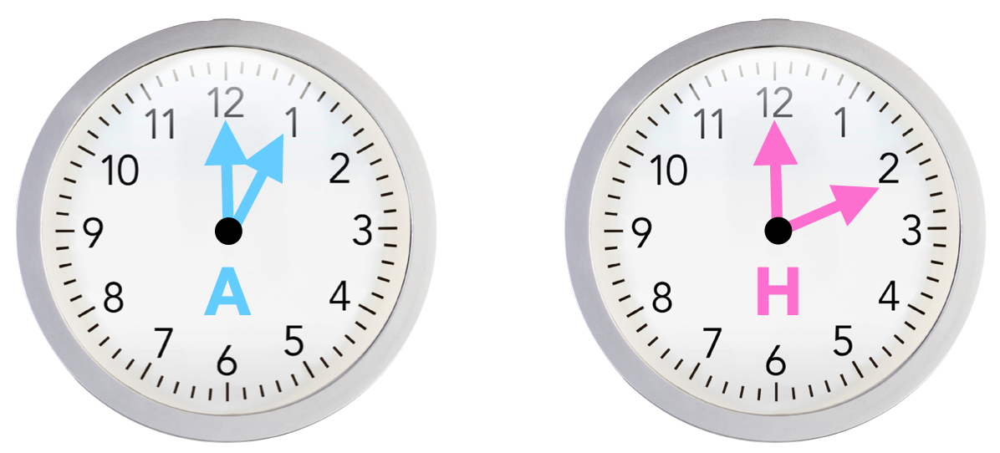
While the \(A\) clock has ticked off 1 second, the \(H\) clock took 2.3 seconds to advance for the same interval.
Away clocks appear to a Home frame to run slower. It appears for an interval of time to take longer.
This is why its called Time Dilation: when your eyes are dilated at the Optometrist’s office, they’ve become wider, more expanded.
This has an immediate effect in particle and nuclear physics. Many nuclei and elementary particles have finite lifetimes. We’ll talk a lot about this later, but it’s sufficient to imagine that a now-you-see-it-now-you-don’t aspect is at work for many pieces of elementary nature. Take the lowly neutron. Put a neutron on the table (in your mind) and let it sit there minding its own business…eventually it will suddenly cease to be a neutron and become a proton, along with an electron and a pesky particle called a neutrino. If you put 100 neutrons on the table after about 10 seconds, on average there will be 50 neutrons and 50 protons on the table. After another 10 seconds, there will be 25 neutrons and 75 protons on the table. The half life of a free neutron is 10.2 seconds. That’s an average.
Now suppose that our 100 neutrons are whizzing by you at 90% of the speed of light and you follow them, then it will take \(10.2 \times 2.3 = 23.5\) seconds for half of those neutrons to have decayed. In the neutron’s (Away) frame, they appear to last 10 seconds, but in the laboratory (Home) frame, they live longer.
This is a very real technique in particle and nuclear physics, used all the time artificially and naturally in nature. We’ll have more to say about this.
There’s more evidence that this is a real thing. In 1971, Joseph C. Hafele, a physicist, and Richard E. Keating, an astronomer took four atomic clocks (Cesium) and put two of them on a regular commercial airliner and two of them at United States Naval Observatory in Washington, D.C. Then they flew around the world, once eastward and once westward…and compared the clocks when they returned.
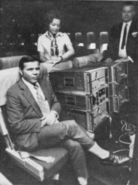
The clocks differed by exactly what Time Dilation would predict. We’ll talk more about this later because the fact that the Home clocks were on the surface of the Earth and the Away clocks were five miles above called into play not only Einstein’s Special Theory of Relativity, but also his General Relativity theory that involves gravitation. Both were required to get the differences expected.
Time Dilation is a fact of nature for all kinds of clocks: mechanical clocks, atomic clocks, elementary particle decays, and biological clocks. Think about that last one. You age according to natural processes of decay and rejuvenation. You heart beats. Your synapses fire at intervals governed by bio-electric impulses. Your cells age and die and are remade. You’re a clock.
Two points:
The time interval between two events measured in the frame in which they happen at the same place, but at different times, is a special time. It’s the situation of our light clock in the frame of the train. As I’ve mentioned, this special time is called “proper time” and it’s actually the shortest time that any interval might have as viewed from any frame. It’s often given the name, \(\tau\) and the frame of reference within which it’s operative is called the Proper Frame.
Moe and Ossie are in two different, co-moving frames of reference and they both have strobe lights manufactured identically. So they would each measure in their own frames, the same proper time interval between each flash. But because of Time Dilation, if Moe is watching Ossie go by, he’d say that Ossie’s strobe is slower than his. At the same time, Ossie is watching Moe go by in the other direction and he’d also say that Moe’s strobe is going slower! Who is right? They both are.
Wait. Hold the phone. They would both say that other’s clock is running slow?
Glad you asked: Yes. If they didn’t, then one would be able to distinguish one frame from the other, but that would violate the First Principle. Both frames are equally valid and are reciprocal in their adjudication of time intervals.
Time between frames.
Time is relative between two co-moving, intertial frames of reference. There is no “right” time.
This leads to the famous Twin Paradox, which is one of a number of “paradoxes” involving Special Relativity.
Note
The so-called paradoxes of Special Relativity are really not paradoxical. They’re circumstances that seem to be not possible – according to your common sense – but when analyzed strictly from within the rules of Relativity, turn out to be the case and internally consistent within the theory.
Please answer question 4 📺
Please answer question 5 📺
16.6.3. Twin “Paradox”#
Herman and Blanche are twins, one of whom is adventurous and the other of whom is a home-body. Blanche is eager for space travel and blasts off from Florida in a fancy spaceship that travels at half the speed of light. In the Home frame – Earth, where Herman resides – Blanche has been gone for 20 years and comes home. They find upon reuniting that Blanche has aged 17.3 years, while Herman has aged 20 years.
This is called the Twin Paradox, and like the other paradoxes of Special Relativity, it’s not a paradox at all. But it is strange.
Wait. Wouldn’t you think the Blanche (in the spaceship) would see Herman (on Earth) flying away from her at half the speed of light and so upon reuniting wouldn’t she be older, rather than younger? Isn’t that a contradiction?
Glad you asked: That’s a great question and is in line with decades of both misunderstanding and just plain wrong explanations. Let me explain without equations.
Notice that Herman’s Home frame never deviates course. He remains in one frame for the entirety of their separation. What about Blanche?
She travels in one direction away from Earth and her brother for 8.6 years (half of that 17.3 years from above) at \(u=0.5c\) in her frame. When it’s time for her to go back to Earth, she has to catch up with Earth, which has been separating for that time. So she must travel back at \(0.8c\) in order to catch up.
So Blanche actually occupies two entirely different reference frames, while Herman never deviates from the single, boring Earth reference frame. So the two situations are not symmetric at all. (Sometimes an attempt to explain this sticks in the obvious, but irrelevant observation that in order to speed up and slow down multiple times in her trip, Blanche’s journey is not describable using Special Relativity alone. Because accelerating frames are involved. That’s not the explanation at all.)